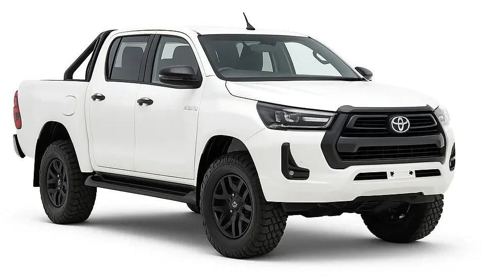

Shop Toyota Hilux Roof Racks
The Toyota Hilux has been Australia's best-selling ute for years running, but almost every Hilux leaves the factory with a bare roof — no rails at all. What fits yours depends on which generation you're driving (N70, N80, the new 9th Gen or an earlier model — see the generation table below), whether you've got a Single, Xtra or Double Cab, and — the detail most buyers miss — whether your Hilux has genuine roof rails, a non-load-rated styling bar, or nothing fitted at all. Rather than guess, select your vehicle below and we'll show you exactly what fits.

What Roof Racks Fit My Toyota Hilux?
The short answer: it depends on your Hilux's generation and what — if anything — is fitted to your roof, not just the model name. An N80 with a factory-fitted sports bar and an N70 base-model with a completely bare roof need completely different mounting systems — even though they're both "Hilux". Get the roof type wrong and you're looking at a rack that either won't fit or won't carry its rated load safely.
Why fitment varies on the Hilux
Unlike some utes, the Hilux has never come from the factory with a genuine load-rated roof rail — but that doesn't mean every roof is the same:
- No rails — bare roof: The vast majority of Hilux across both N70 and N80 generations left the factory with nothing on the roof at all. These need a fixed-point or track system (like a Rhino-Rack RTS/Backbone setup) that mounts directly to the roof panel, installed by a qualified fitter.
- Styling bars only (non load-rated): Higher-spec trims like Rogue and Rugged X are fitted with a sports/styling bar down each side of the tub or roofline — these look like rails but aren't rated to carry a roof rack's load. Mounting to these directly is a common and dangerous mistake.
- Aftermarket rails already fitted: Some Hilux have had rails or a rack fitted by a previous owner or dealer. If yours does, we still need to confirm what system they're compatible with before recommending a new rack.
What we always tell customers
The single most common mistake we see with Hilux roof rack orders is buyers assuming the black sports bar along their tray or roofline is a load-rated roof rail — it isn't. Plenty of Rogue and Rugged X owners find this out the hard way. If you're not certain what's fitted to your roof, send us a photo before you order — it takes seconds to confirm and saves you the cost of returning the wrong rack.
Which Hilux Do I Have?
The Hilux has been in production since 1968 in several body styles, so "Hilux" alone doesn't tell us much. Find your body style below, then your series and years. Not sure? Your compliance plate (driver's door jamb) lists the build date, or just use the Fit Finder above.
"N70" and "N80" are widely used shorthand for these Hilux series, not official Toyota generation names. Years are a guide to help you identify your vehicle; if in doubt, check your compliance plate or send us a photo of your roof and we'll confirm fitment before you order.

Friendly + Trusted Nationwide Experts in Roof Rack Supply and Installation
Frequently Asked Questions
Straight answers to the common questions our team hears everyday regarding Roof Racks for the Toyota Hilux.
Here you'll also find answers to some of the most common questions we receive about our product range, including fitment, installation, load capacity, and general product use. If you can't find what you're looking for here, our team is always happy to help — simply get in touch with us on 1300 071 264 and we'll be glad to assist with any additional queries.
Can I mount a roof rack straight onto my Hilux's sports/styling bar?
No — the black sports bar fitted to Rogue and Rugged X grades is a styling piece, not a load-rated roof rail. Mounting a rack directly to it isn't safe. You'll need a fixed-point or track system that mounts to the roof panel itself, same as a bare-roof Hilux.
What's the maximum weight I can carry on a Hilux roof rack?
Load rating depends on the mounting system — a bare-roof fitment on a Backbone-style track system typically carries more than an aftermarket rail-based system. Check the specific product's rated load and never exceed your vehicle manufacturer's own roof load limit, whichever is lower.
Will a roof rack affect my Hilux's GVM or towing capacity?
A roof rack itself is light, but anything you carry on it counts toward your vehicle's GVM the same as any other load. If you're already close to your GVM or towing near your rated limit with a loaded trailer, factor the rack and cargo weight in — ask our team if you're unsure.
Do you offer professional installation for the Toyota Hilux?
Yes — we fit roof racks nationwide at our 35+ stores. Book an installation above or use the Store Finder to find your nearest fitting centre.
How do I clean and maintain my roof rack on my Hilux?
Regularly rinse off salt/road grime with fresh water, check mounting bolts are still torqued to spec every few months, and inspect rubber feet/clamps for wear if you remove and refit the rack often.
Do roof racks affect fuel economy in my Hilux?
Yes, to some degree — added wind resistance typically increases highway fuel consumption slightly, more so with a roof box or bulky cargo fitted than with a bare platform or set of bars.
Can I install a Hilux roof rack myself?
Bare-roof and fixed-point systems involve drilling and torque-critical mounting, so we recommend professional installation for these — the vast majority of Hilux fitments. If your Hilux already has aftermarket rails fitted, a compatible crossbar system can often be a straightforward DIY fit with basic tools.
Are roof racks universal or Hilux-specific?
Hilux-specific. Mounting points, leg spacing and load ratings are engineered per generation (N70 vs. N80) and roof type — use the Fit Finder above to confirm exact compatibility before ordering.
Can I fit a roof rack if I already have a canopy or tub liner fitted?
Yes — a canopy or tub liner doesn't affect roof rack fitment, since roof racks mount to the cab roof, not the tray. Let us know your setup when ordering if you're also after tray-mounted accessories, so we can check clearance between the two.